| 日付 | 2021年1月1日（金） |
|---|---|
| 山域 | 高尾周辺 |
| メンバー | 家族（妻、長女・9歳、長男・7歳） |
| 山行形態 | 子連れ日帰り |
| アクセス | 車 |
| ルート (Map) | 小仏峠駐車場 (8:04) - (8:33) 小仏峠 - (9:03) 景信山 - (10:01) 堂所山 - (10:29) 明王峠 - (11:09) 陣馬山 (11:59) - (12:36) 明王峠 - (13:44) 景信山 - (14:23) 小仏峠駐車場 |
コロナ禍で帰省を控えたため、この正月は暇だ。
正月早々に初登りに行くことにする。
行先は陣馬山。景信山～高尾山は歩いたことがあるが、
景信山～陣馬山は歩いたことがないエリアだ。
長い尾根だが登りがあまりないので、のんびり縦走を楽しむことにする。
小仏峠東の駐車場は手前から路駐がいっぱい。
初日の出を拝もうと多くの人が訪れているようだ。
空いたばかりのスペースに車を停める。標高360m。
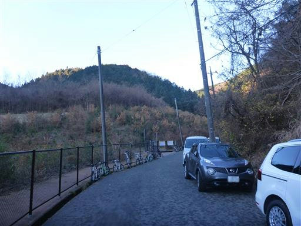
路駐が多かったから空いたスペースに路駐したが、
駐車場にもポツポツと空きがある。
初日の出を見た後に下山してきた人が多いのだろう。
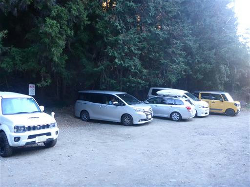
最初の方は車道歩き。次々と下山者とすれ違う。
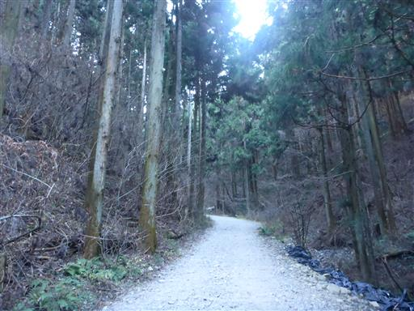
小仏峠に到着。景信山に直接登るつもりだったが、
道を間違えて小仏峠経由になってしまった。

峠には地蔵が祀られている。
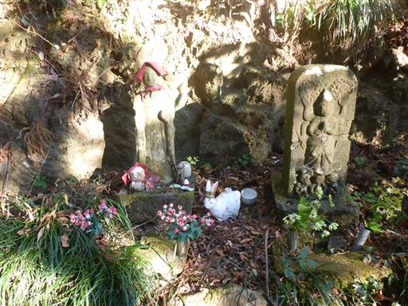
景信山までは歩きやすい道が続く。
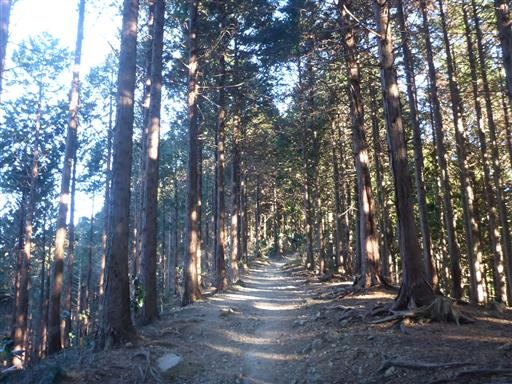
景信山に到着。標高727m。
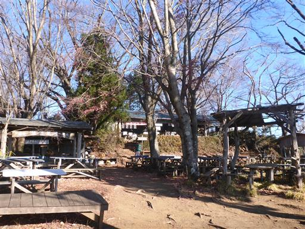
山頂からは大展望が広がる。
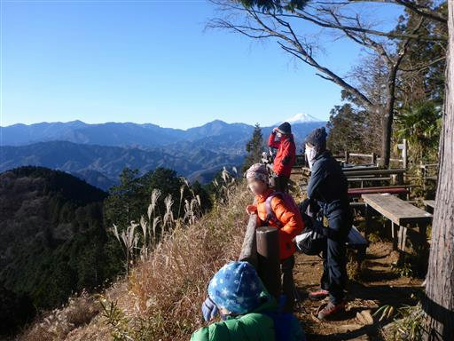
先日降った雪で富士山がようやく白く染まる。
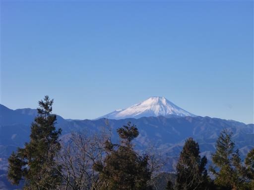
遠景は丹沢の山々。

遠く相模湾と江の島まで見えている。
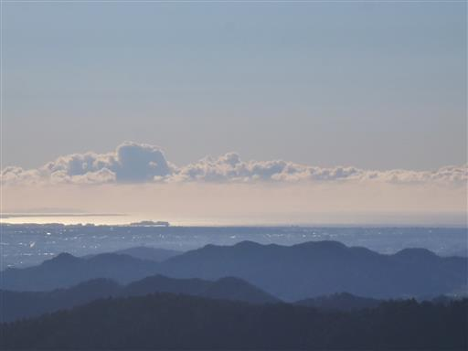
景信山の山頂標識。6年前からずいぶんと立派な山頂標識に変わっている。
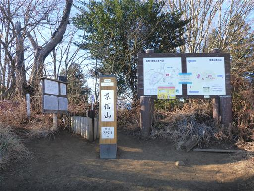
景信山～陣馬山は未知の領域。気持ちの良い尾根道が始まる。
人通りは少なく静かな尾根道だ。
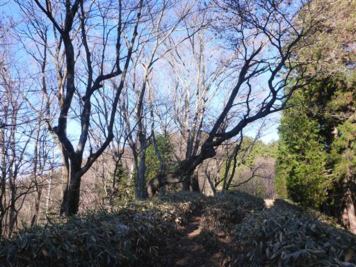
ところどころに消火用水が置かれている。
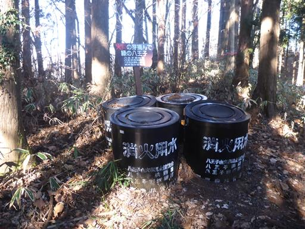
堂所山に寄り道する。標高733m。
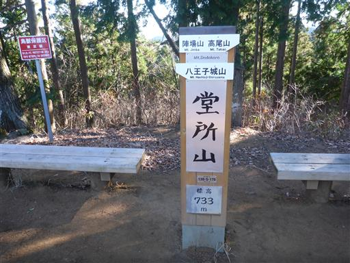
防火帯だろうか？木が切り開かれている。
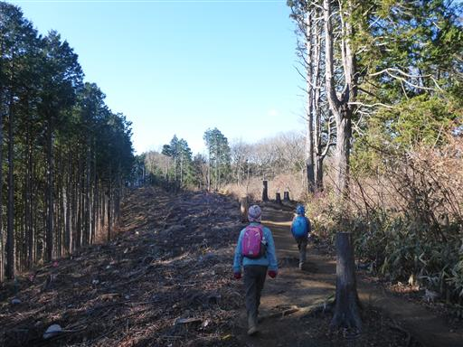
アップダウンの少ない歩きやすい尾根だが、ほとんどが植林地帯なのが残念だ。
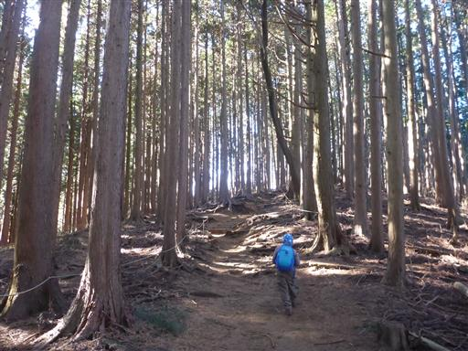
明王峠に到着。以前陣馬山に来たときの道と合流だ。
ここからは縦走路ではなく陣馬山への登山道となるため、人通りが多くなる。
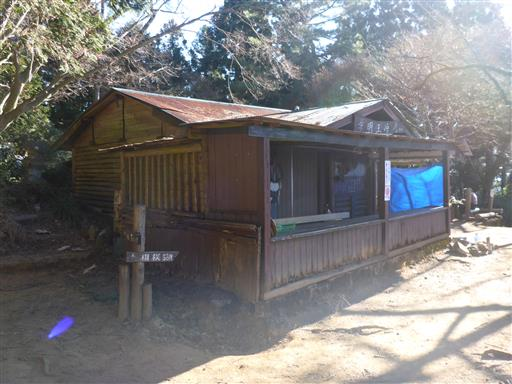
尾根道を歩くこと40分、陣馬山に到着する。標高855m。

陣馬山にも景信山同様、茶屋が並んでいるが多くが閉まっている。
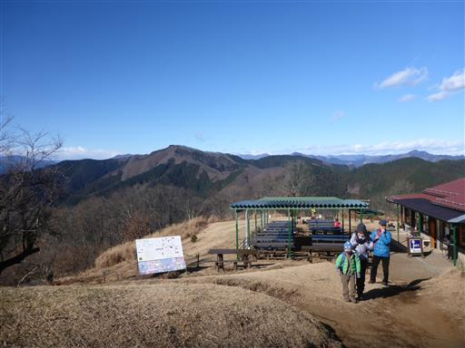
ここからも見事な富士山が望める。
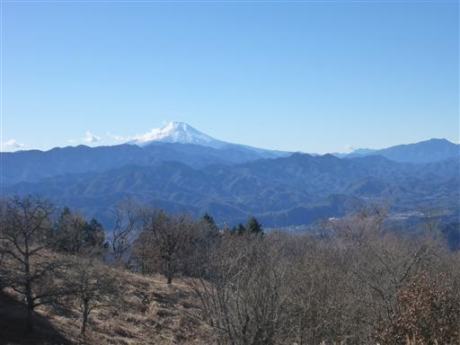
周囲の山々。遮るもののない素晴らしい展望の山だが、
展望の良い場所は茶屋に占められているのが残念だ。
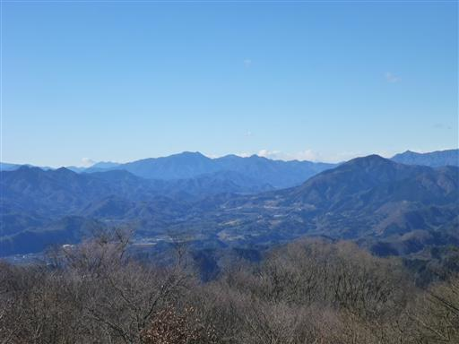
遠く東京都心部のビル群とスカイツリーもよく見えている。
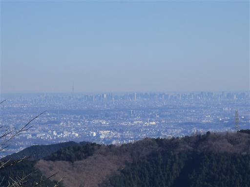
最後に山頂標識前で写真を撮ってから下山を開始する。
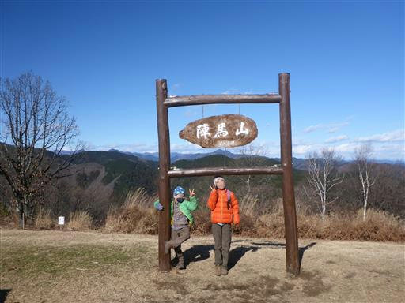
下山は往路を戻る。
午後になっても気温は低く、霜柱は解けずに残っている。
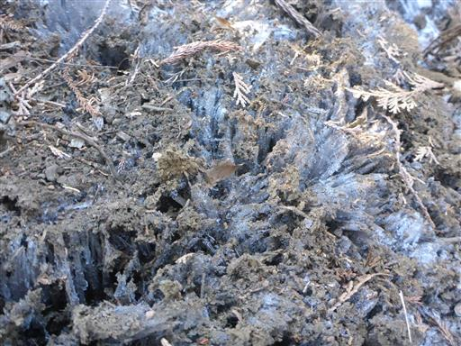
景信山に戻ってくる。もう人影はまばらだ。
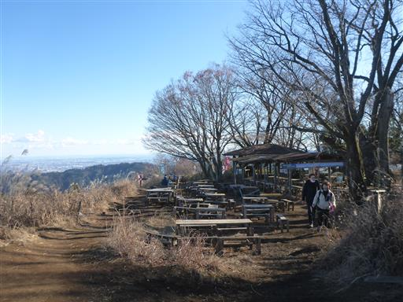
景信山は鬼滅の刃・時透無一郎の出身地らしい。
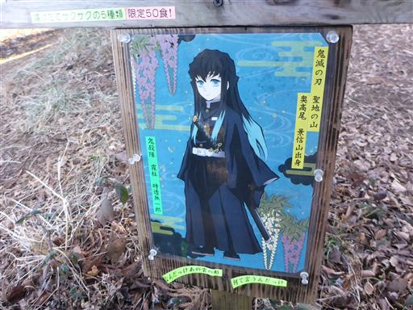
帰りは道を間違えず、小仏峠を経由せずに直接下る道を歩いて下山。
横に長い道のりではあったが、アップダウンが少なく比較的楽な山行だった。
静かで歩きやすい縦走路だったが、植林地帯が多いのが少々残念だった。
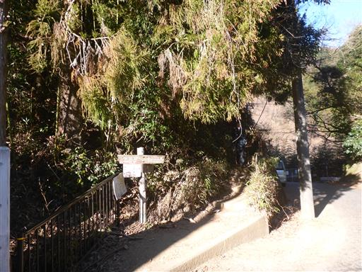